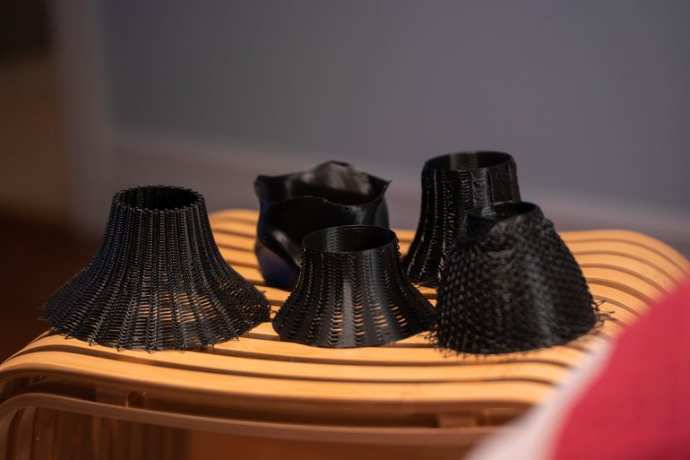

After reading the book "Advanced 3D Printing with Grasshopper: Clay and FDM", by Diego Garcia Cuevas and Gianluca Pugliese, I learnt about the basics of creating a slicer within Grasshopper. As a result I decided to experiment and write my own slicer with the objective of creating a lamp shade using non-planar 3D printing.